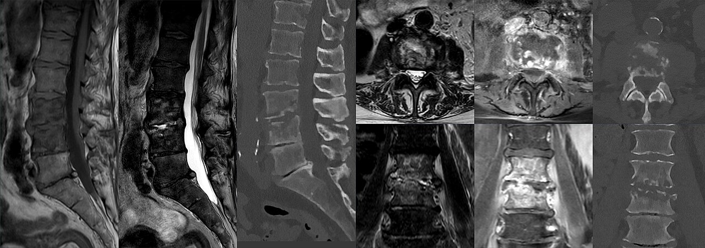

Ficha del catálogo
Espondilodiscitis infecciosa
- Sistema
- Óseo
- Modalidad
- RM
- Región
- Columna
- Dificultad
- Avanzado
Infección del disco intervertebral y de los cuerpos vertebrales adyacentes, habitualmente por diseminación hematógena. Cursa con dolor de espalda intenso, de predominio nocturno y no mecánico, con fiebre inconstante. El retraso diagnóstico conduce a destrucción vertebral, absceso epidural y déficit neurológico.
Técnica
Resonancia magnética de columna con contraste, con secuencias T1, T2 con supresión grasa y series poscontraste en planos sagital y axial.
Qué observar
- Hiperseñal del disco y pérdida de su altura con destrucción de los platillos
- Edema de los dos cuerpos vertebrales contiguos con caída de señal en T1
- Realce del disco y de los cuerpos afectados tras contraste
- Absceso paravertebral o del psoas con realce periférico
- Colección epidural con desplazamiento y compresión del saco dural
- Ausencia de afectación de los pedículos, a diferencia del tumor
Hallazgos
Afectación conjunta de un disco y de los dos cuerpos vertebrales adyacentes con edema, realce, destrucción de platillos y colecciones asociadas.
Perlas
La regla práctica es que la infección destruye el disco y el tumor lo respeta. Un proceso que compromete dos vértebras y el disco entre ellas es infección hasta que se demuestre lo contrario.
Diagnóstico diferencial
- Metástasis vertebral
- Respeta el disco y afecta los pedículos.
- Cambios degenerativos de platillos
- Disco deshidratado sin realce ni colecciones.
- Espondilodiscitis tuberculosa
- Afectación de varios niveles con abscesos fríos grandes y relativa preservación discal inicial.
Simuladores
- Cambios inflamatorios de platillos degenerativos
- Fractura vertebral con edema
- Artropatía neuropática de columna
Por modalidad
- RM
- Técnica de elección, precoz y sensible
- TC
- Guía la biopsia y muestra la destrucción ósea
- RX
- Cambios tardíos con pinzamiento discal e irregularidad de platillos
Protocolo
Resonancia sagital T1, T2 con supresión grasa y poscontraste, con planos axiales sobre el nivel afectado para valorar el espacio epidural.
Clasificación
Errores frecuentes
- Confundirla con cambios degenerativos avanzados de platillos
- No administrar contraste y pasar por alto un absceso epidural
- Iniciar antibiótico antes de la toma de muestras cuando el paciente está estable

espondilodiscitis infeccion vertebral absceso epidural disco psoas columna resonancia